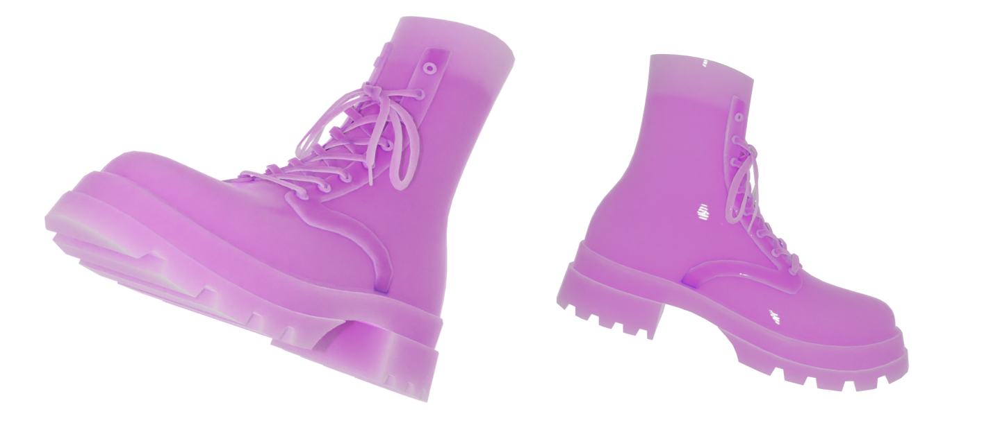

Статьи
Выбросим старую обувь
Обувь играет важную роль в осознанном потреблении, поскольку выбор правильной обуви может снизить наш экологический след. Осознанный подход включает выбор качественных и долговечных моделей, произведенных с учетом этических и экологических принципов. Также стоит рассмотреть возможность ремонта и переработки обуви, чтобы продлить ее срок службы и снизить потребление ресурсов. И, конечно же, поддержка брендов, которые придерживаются устойчивых практик и заботятся о рабочих условиях, играет важную роль в создании более справедливой и экологически ответственной модной индустрии.
Производство обуви является одним из самых загрязняющих процессов текстильной промышленности.
 Утилизация обуви
Утилизация обувиКаждый год миллионы тонн обуви выбрасываются в мусорные контейнеры по всему миру. В связи с растущей проблемой экологического загрязнения, необходимо научиться утилизировать обувь экологично.
 Способы утилизацииПередайте ненужную обувь в благотворительность. Если обувь все еще может быть использована, то передайте ее в благотворительную организацию. Возможно, кто-то еще может использовать ее.
Если обувь нельзя передать в благотворительность, то можно попробовать переработать ее. Некоторые компании предлагают программы переработки обуви, которые могут превратить ее в другие материалы или вторичное сырье.
Натуральная обувь из натуральных материалов, таких как кожа, может быть использована для создания компоста. Размельченная обувь может быть добавлена в компостный ящик вместе с другими органическими отходами и использована как удобрение для растений.
Если обувь содержит многоразовые элементы, такие как металлические крепления, то их можно удалить и отдать на переработку отдельно.